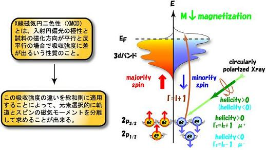
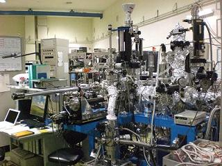

ナノスケールにおける磁気状態の研究
金属表面上に原子層単位で制御されて作製された磁性超薄膜は、バルクの磁性体には見られない特異な磁性を発現する。 例えば、磁化が表面に対して垂直に向くという磁気特性(垂直磁気異方性)は、基礎物理学的な興味だけではなく、磁気記録媒体などのデバイスへの応用という面からも非常に注目されている。 磁性薄膜を研究する上では、原子レベルで構造を制御して作製した試料について、きちんと構造を評価し、磁気特性を評価する必要がある。 磁気特性の測定に関しては、光や電子による測定法が用いられる。 その代表的な測定法として、内殻吸収を利用した内殻吸収磁気円二色性(MCD)がある。 MCD 分光測定は磁性薄膜について元素選択的にスピン・軌道磁気モーメントを得ることが可能である。谷口研究室では、広島大学放射光科学研究センター HiSOR BL-14においてナノスケール磁性体の作成、結晶構造および磁性の研究を行っている。 測定にはX線内殻吸収磁気円二色性(XMCD)分光を用い、現在は主に金属基板上に原子層制御した磁性金属薄膜や多層膜を作成し、膜厚に依存した磁気異方性や磁気モーメントの変化を研究している。
XMCD
X-ray Magnetic Circular Dichroism : XMCD

XMCD には次のような特徴がある。 内殻準位のエネルギーは元素によって異なるため、励起光のエネルギーを選ぶことによって特定の元素のXMCD スペクトルを得るこができる。 これは薄膜、多層膜や合金などにおいて強力な点である。 Thole、Carra らによって導かれた総和則(Sum Rules)を用いることによって原子の軌道磁気モーメント、スピン磁気モーメントを分離して観測できる。 これは磁気光学カー効果(MOKE)など試料全体の磁化を測定する実験手法では得られない利点である。
BL-14

広島大学放射光科学研究センター(HiSOR) BL-14
広島大学放射光科学研究センター(HiSOR) BL-14